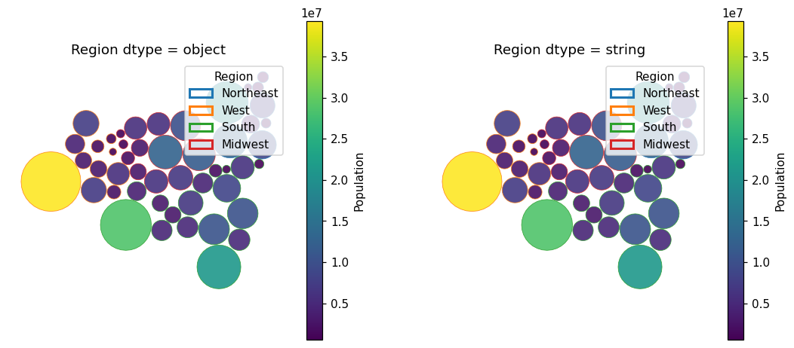

plot(edgecolor="<column>") no longer raises TypeError for pandas string-dtype columns; the fixed plot is shown for object and string dtypes.
np.issubdtype cannot interpret pandas extension dtypes (string, category, Int64, Float64). The numeric check in _apply_color_mapping and in the legend helper now goes through _is_numeric_values, which uses pd.api.types.is_numeric_dtype and keeps booleans categorical, as before.
plot(edgecolor="Region") and facecolor="Region" raise TypeError when Region is string or category dtype. The same happens for numeric Int64 / Float64 columns.hatch= was not affected (it converts with astype(str)).symbol_cartogram operate on np.asarray output or on arrays built from floats, so no other path has the bug.tests/test_symbol_plot_string_dtype.py: edgecolor/facecolor/hatch with object, string and category columns, and facecolor/edgecolor with float, Int64 and Float64 columns. 6 of 12 fail on main, all pass with the fix.pytest -k symbol: 310 passed."string" Region columns (figure).
edgecolor="Region" with an object column (left) and a string-dtype column (right), after the fix. Both give identical colors.